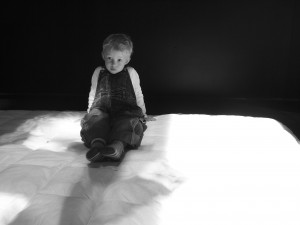

Utlysning av midler til verksteder med SceSam
- Dato:
- 15.12.2012 til 15.12.2012
- Start kl :
- 00:00
- Slutt kl :
- 00:00
- Adresse:
- , Oslo / Trondheim
 Det kunstneriske forskningsprosjektet SceSam – interaktive dramaturgier i scenekunst for barn søker i samarbeid med Dramatikkens hus scenekunstprosjekter som gjennom kunstnerisk praksis og refleksjon ønsker å forske i forholdet mellom barnepublikummet og scenekunsten.
{kind=link}
Hva skjer med kunsten når den blander seg med barna? Hvilke scenekunstneriske uttrykk, tekster og kommunikasjonsstrategier kan interaktive dramaturgier synliggjøre og utvikle?
Til å utforske interaksjon og barns medskaping i scenekunsten, søker SceSam kunstnere og prosjekter innenfor hele scenekunstfeltets praksisområde, som teater, dans, musikkteater, performance, installasjon og andre former for iscenesettelser (av) i tid og rom. Formålet er å legge til rette for kunstnerisk fordypning i møte med et barnepulikum i alderen 3 til 9 år.
Vi tilbyr:
- Honorar til to eller tre kunstnere i én uke (avhengig av prosjektes natur)
- Samarbeid med en mentor/dramaturg med barnefaglig kompetanse
- Lokaler og teknisk bistand
- Mulighet for kunstnerisk utvikling over tid, tilknyttet et kompetent og dedikert barnekunstfaglig nettverk.
Vi ønsker oss:
En prosjektbeskrivelse på maks 10 000 tegn, sentrert rundt en kunstfaglig problemstilling knyttet til SceSams område for undersøkelse. I tillegg kommer bakgrunnsinformasjon om søkerne, herunder CVer og annen informasjon som kan være relevant for å belyse søkerens kunst- og barnefaglige kompetanse/erfaring.
For utfyllende informasjon om prosjektet og om SceSams problemstillinger, gå inn på www.scesam.no eller dramatikkenshus.no. For spørsmål, kontakt produsent Hege Knarvik Sande på hege(a)scesam.no.
Søknadsdfrist
Søknaden sendes til hege(a)scesam.no senest 15. desember. Tildelingen offentliggjøres 15. januar. Verkstedene skal finne sted i løpet av våren 2012.
Prosjektet finaniseres av Dramatikkens hus og Kunstløftet, og er også støttet av Norsk Skuespillersenter.
Praktiske opplysninger
Dagshonoraret for kunstnerne i verkstedet er 2500 kroner. En uke vil dermed utgjøre 12500 kroner pr kunstner.
Verkstedene kan finne sted i Oslo (på Dramatikkens hus og på Norsk skuespillersenter) eller i Trondheim (i samarbeid med Propellen Teater).
SceSam dekker ikke utgifter til reise og opphold.
Det er ikke nødvendig å legge ved et budsjett eller en framdriftsplan i søknaden. Det er imidlertid lov til å gjøre det dersom du har et prosjekt som allerede er på vei mot produksjon.
SceSam skaffer mer enn gjerne barn til verkstedene, og vi legger også til rette for at barna og kunstnerne kan samarbeide tett i den uka verkstedet varer.
Verkstedene kan finne sted når som helst i perioden 3. mars til medio juni, så lenge det er i samråd med SceSam. Norsk Skuespillersenter har satt av tid til ett verksted i uke 10.
Foto: Andrea Haugerud Hovik. Bildet er fra produksjonen “Mamma Danser” av Teater